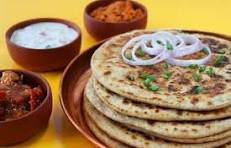

Aloo Paratha

Aloo Tikki is a popular snack made with boiled and mashed potatoes,
spices, and herbs, shallo w-fried until crisp.
Ingredients:
- Boiled potatoes
- Spices (like cumin, coriander, garam masala)
- Chopped coriander leaves
- Green chilies
- Salt
- Oil for frying
- Pinterest
- Dassana's Veg Recipes
Instructions:
-
Mash the boiled potatoes and mix with spices, chopped coriander, green
chilies, and salt.
- Shape into patties.
- Shallow fry until golden brown and crispy on both sides.